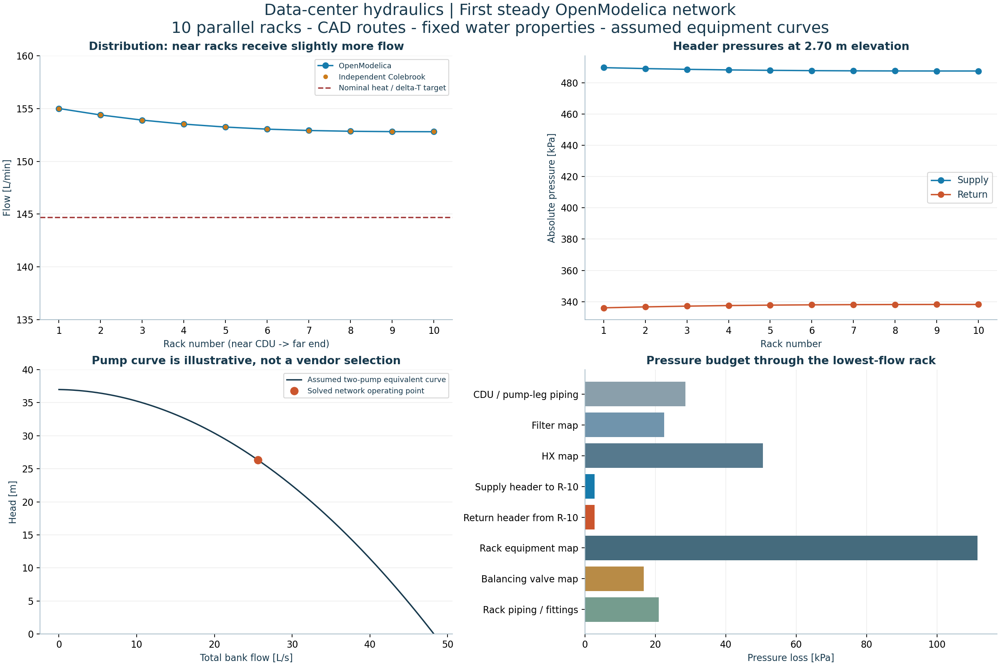

KHANI SOLUTIONS / DATA-CENTER COOLING / STAGE 03
The first solved hydraulic network.
Ten parallel rack branches, segmented direct-return headers, measured CAD routes and an explicit equivalent curve for two duty pumps. Built and solved on Intel with OpenModelica 1.27.1 and Modelica Standard Library 4.1.0.
Initial steady numerical study with assumed device curves and fitting losses. The 1 MW heat load sets the flow target; rack heating, physical heat-exchanger thermal performance, controls and startup are not simulated.
Total flow25.57 L/sPump head26.35 mPump differential256.4 kPaEstimated electric input9.71 kW Each duty pump carries approximately 46.03 m³/h. The standby is isolated. Rack flow ranges from 152.80 to 155.00 L/min, versus a 144.7 L/min nominal thermal-duty target. The flow spread is 1.43% of the mean.

OpenModelica numerical outputs; the orange comparison points use an independent exact-Colebrook network calculation with the same assumptions. These are steady operating-point plots, not a time-dependent startup response.
Read the network, step by step
- Convert the 1 MW / 10 K design basis into the target flow using fixed water properties near 40 °C.
- Import routed lengths; exclude the two 0.6 m blind header tails from circulating flow.
- Intersect the explicit assumed pump curve with flow-dependent network resistance. Flow is solved, not forced to the thermal target. The Stage 01 pressure margin is a selection allowance, not an extra physical resistor.
- Reduce supply-header flow as racks branch off; accumulate return flow toward the CDU.
- Include hydrostatic pressure changes across risers, rack drops and returns. Each complete equal-density closed loop has zero net static head.
- Check mass and pressure balances, then compare against an independent network solution before interpreting the distribution.
The near racks receive slightly more flow because their shared header paths are shorter. All rack flows exceed the initial target with this curve. A later control stage can test reduced speed and balancing; this run does not optimize them.
Rack operating points
| Rack | Flow, L/min | Target, L/min | Supply absolute, kPa | Return absolute, kPa |
|---|
| R-01 | 155.00 | 144.70 | 489.59 | 336.10 |
| R-02 | 154.38 | 144.70 | 488.99 | 336.70 |
| R-03 | 153.90 | 144.70 | 488.51 | 337.18 |
| R-04 | 153.52 | 144.70 | 488.14 | 337.55 |
| R-05 | 153.24 | 144.70 | 487.87 | 337.83 |
| R-06 | 153.04 | 144.70 | 487.67 | 338.02 |
| R-07 | 152.92 | 144.70 | 487.55 | 338.14 |
| R-08 | 152.84 | 144.70 | 487.48 | 338.22 |
| R-09 | 152.81 | 144.70 | 487.44 | 338.25 |
| R-10 | 152.80 | 144.70 | 487.43 | 338.26 |
Numerical verification
- Equation check: 4,114 equations and variables.
- Maximum mass-balance residual: 2.22e-15 kg/s.
- Maximum loop-pressure residual: 0.00e+00 Pa.
- Independent Colebrook comparison: maximum rack-flow difference 0.0002%.
- Flat and 3.0 m header checks preserve flow and pump head at fixed friction lengths; local pressures shift by the expected hydrostatic amount. The raised check stays within available pipe lengths.
- The numerical fixed-temperature volume removes pump work to close the model energy equations. It is not an expansion-vessel size or physical CDU thermal prediction.
Retained compiler note and acceptance limits
The model contains alias variables with redundant start and/or conflicting nominal values. It is recommended to resolve the conflicts, because otherwise the system could be hard to solve. To print the conflicting alias sets and the chosen candidates please use -d=aliasConflicts.
The accepted run has no unit inconsistency, negative-height bound warning or runtime assertion failure. The algebraic solution is repeated over 0–1 s for CSV export; this does not simulate startup. No physical validation, selected pump/NPSHR curve, pressure qualification, water hammer, control dynamics or standby switchover is established.
Mohammadreza Khani, PhD · Independent numerical study · 23 October 2026 · Next: review the baseline, then test speed, balancing and component sensitivities.